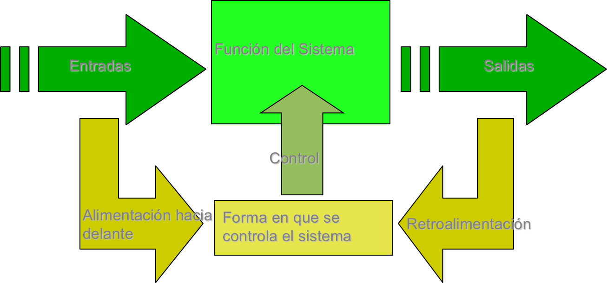

Comenzando : ¿Qué es todo esto?
La programación es un arte, y como todo implica dedicación pero en primer lugar esta la preparación. En este sentido, los aspectos que a continuación se presenta representa la base de todo analista de sistemas.
Abstracción
Es un proceso mental que permite al individuo comprender el concepto de un objeto sin tener al objeto de manera tangible.
La abstracción es la capacidad mental superior que tiene todo ser humano para poder deducir la esencia de un concepto o situación determinada.
¿Cómo se abstrae?
La abstracción consiste en aislar un elemento de su contexto o del resto de los elementos que lo acompañan.
El término se refiere al énfasis en el "¿qué hace?" más que en el "¿cómo lo hace?"
La abstracción permite que dispongamos de las características de un objeto que necesitemos.
Los lenguajes de programación son las herramientas mediante las cuales los diseñadores de lenguajes pueden implementar los modelos abstractos.
La abstracción ofrecida por los lenguajes de programación se puede dividir en dos categorías:
- Abstracción de datos (pertenecientes a los datos) y,
- Abstracción de control (perteneciente a las estructuras de control).
Inferir y Abstractar
Una inferencia es una evaluación que realiza la mente entre expresiones bien formadas (EBF) de un lenguaje, que, al ser relacionadas intelectualmente como abstracción, permiten trazar una línea lógica de condición o implicación lógica entre las diferentes EBFs.
Una forma práctica de establecer una relación entre éstos términos es que el primero permite extraer una cosa de otra de manera que se pueda llegar a una conclusión, y el segundo, considera aisladamente las cualidades principales de un objeto en su pura esencia.
Sistemas de Información
Sistema: es un conjunto de elementos interrelacionados para cumplir un determinado propósito.
Información: es un grupo de datos organizados, procesados, que representan un conocimiento explícito.
Automatización: es un sistema donde se transfieren tareas de producción, realizadas habitualmente por operadores humanos a un conjunto de elementos tecnológicos.
Diagrama de Proceso de los Sistemas

Un sistema tiene las siguientes características:
- Existen dentro de un entorno.
- Tienen entradas y salidas.
- Transforman sus entradas para producir sus salidas.
- Disponen de interfaces.
- Pueden estar formados por subsistemas.
- Disponen de un mecanismo de control basado en la retroalimentación.
Diseño Lógico de Aplicaciones
Algoritmo: Es una lista ordenada y finita de pasos que permiten solucionar un determinado problema.
Pseudocódigo: Es la representación narrativa de un algoritmo, y es una mezcla de un idioma con un lenguaje de programación.
Diagrama de Flujo de Datos (DFD): Es la representación gráfica de un algoritmo, y consta de una serie de símbolos que representan el “flujo” de las instrucciones que se realizan.
Modelado de Objetos: es una abstracción resumida y precisa de lo que debe hacer el sistema deseado y no de la forma en que se hará (dicho sistema).